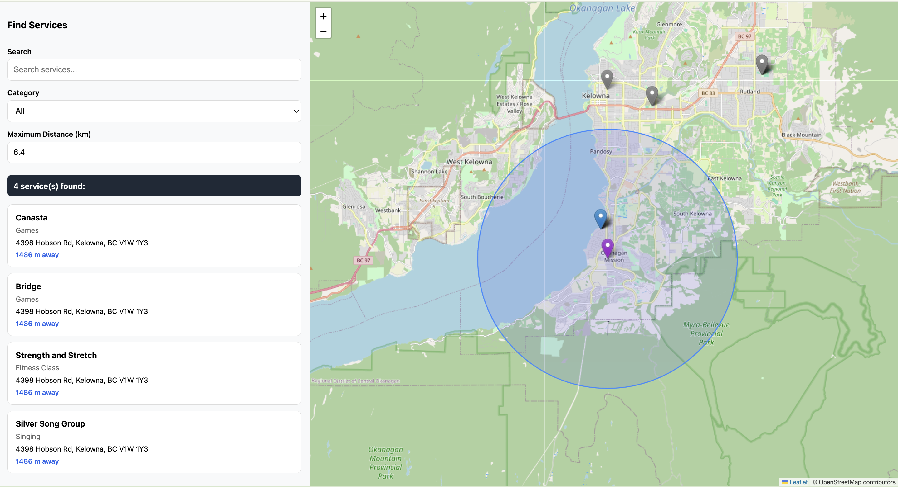

GIS Community Support App

Project Information:
-
A GIS-enabled web application that helps users discover and visualize community support services based
on proximity, categories, and spatial relationships.
-
I have been hired to develop this for the UBCO Public Health Research Lab.
-
Regression testing suite (unit, integration, and e2e) utilizes:
-
Backend: pytest
-
Frontend: Vitest, JSDOM, React Testing Library (RTL), Mock Service Worker (MSW)
-
End-to-end (e2e): Playwright, MSW
-
Full stack application with GIS-based architecture to allow for database analytics using GIS platforms.
-
Technology stack:
-
Frontend: React, TypeScript, Leaflet (OSM Map Tile Layer, OSRM Routing Layer)
-
Backend: FastAPI, SQLAlchemy, Alembic
-
Database: PostgreSQL, PostGIS
-
Docker Compose: 3 containers (frontend, backend, database)